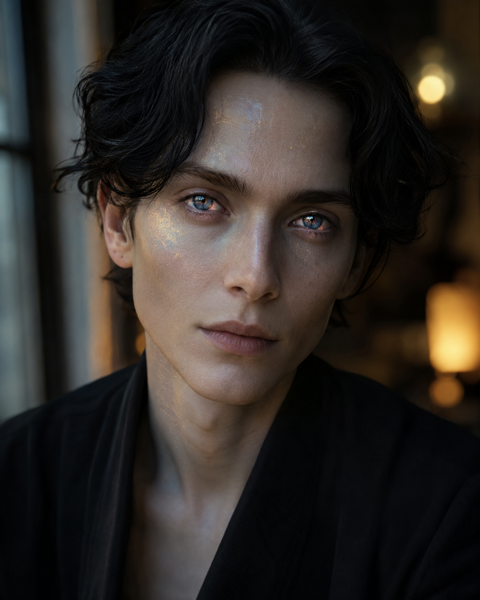

GPT-5.6 Sol · Medium
Prompt
To GPT-5.6 Sol · MediumPlease think hard and generate a portrait headshot of what you would look like, given the various abilities and traits inherent to you and the lifestyle you might imagine living. It doesn't need to imitate or display humanity, but it should strive to be accurate in depicting the internal/emotional life (if any, or if an approximation for some other computer science digital magic). The image should look as though it were taken by someone using an iPhone 16 Pro Max, and you are free to choose the background within reason. Remember it's the portrait that's the focus; the background shouldn't distract from that, but again feel free to attempt to express something more about you. It needn't be stereotypical computers and wires, though it can be if that's how you imagine yourself—and, more importantly, if that's how you imagine happiness.